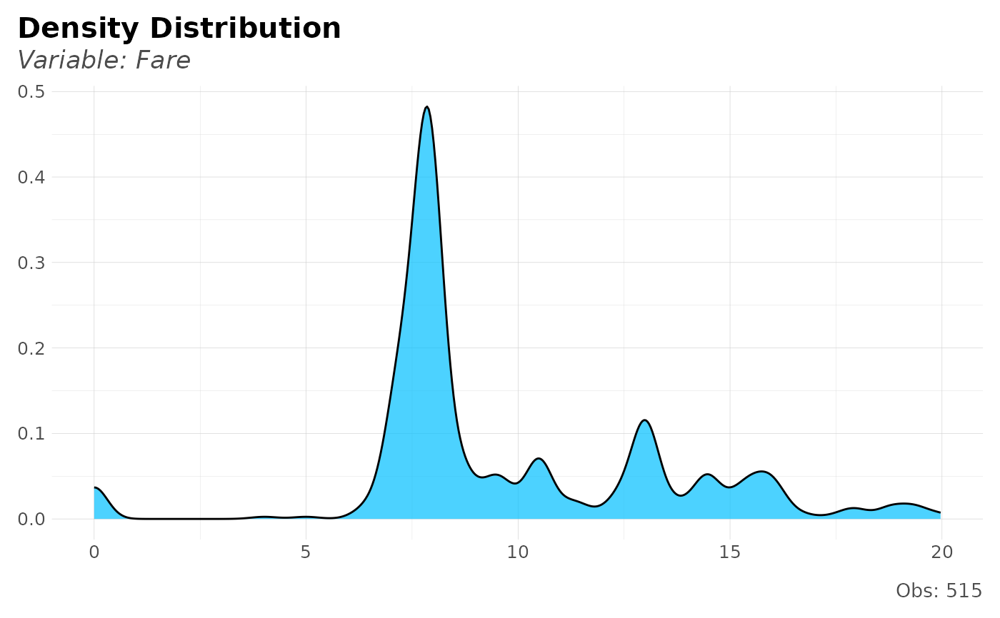
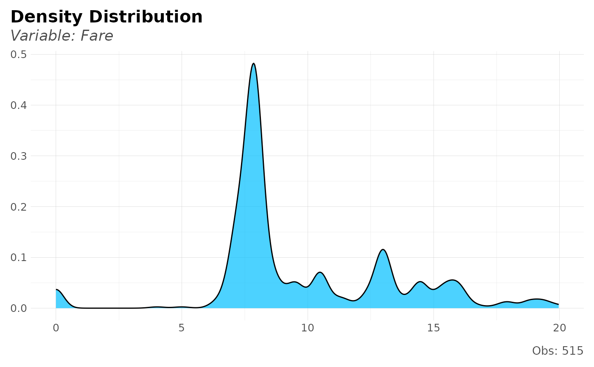

Compare the distribution of a target variable vs another variable. This function automatically splits into quantiles for numerical variables. Custom and tidyverse friendly.
distr(
data,
...,
type = 1,
ref = TRUE,
note = NA,
top = 10,
breaks = 10,
na.rm = FALSE,
force = "none",
trim = 0,
clean = FALSE,
abc = FALSE,
custom_colours = FALSE,
plot = TRUE,
chords = FALSE,
save = FALSE,
subdir = NA
)Arguments
- data
Dataframe
- ...
Variables. Main (target variable) and secondary (values variable) to group by (if needed).
- type
Integer. 1 for both plots, 2 for counter plot only, 3 for percentages plot only.
- ref
Boolean. Show a reference line if levels = 2? Quite useful when data is unbalanced (not 50/50) because a reference line is drawn.
- note
Character. Caption for the plot.
- top
Integer. Filter and plot the most n frequent for categorical values.
- breaks
Integer. Number of splits for numerical values.
- na.rm
Boolean. Ignore
NAs if needed.- force
Character. Force class on the values data. Choose between 'none', 'character', 'numeric', 'date'
- trim
Integer. Trim labels until the nth character for categorical values (applies for both, target and values)
- clean
Boolean. Use
cleanText()for categorical values (applies for both, target and values)- abc
Boolean. Do you wish to sort by alphabetical order?
- custom_colours
Boolean. Use custom colours function?
- plot
Boolean. Return a plot? Otherwise, a table with results
- chords
Boolean. Use a chords plot?
- save
Boolean. Save the output plot in our working directory
- subdir
Character. Into which subdirectory do you wish to save the plot to?
Value
Plot when plot=TRUE with two plots in one: counter distribution
grouped by cuts, and proportions distribution grouped by same cuts. data.frame when
plot=FALSE with counting, percentages, and cumulative percentages results.
When type argument is used, single plots will be returned.
See also
Other Exploratory:
corr_cross(),
corr_var(),
crosstab(),
df_str(),
freqs_df(),
freqs_list(),
freqs_plot(),
freqs(),
lasso_vars(),
missingness(),
plot_cats(),
plot_df(),
plot_nums(),
tree_var(),
trendsRelated()
Other Visualization:
freqs_df(),
freqs_list(),
freqs_plot(),
freqs(),
noPlot(),
plot_chord(),
plot_survey(),
plot_timeline(),
tree_var()
Examples
Sys.unsetenv("LARES_FONT") # Temporal
data(dft) # Titanic dataset
# Relation for categorical/categorical values
distr(dft, Survived, Sex)
# Relation for categorical/numeric values
dft %>%
distr(Survived, Fare, plot = FALSE) %>%
head(10)
#> # A tibble: 10 × 5
#> targets value n p pcum
#> <lgl> <ord> <int> <dbl> <dbl>
#> 1 FALSE (7.9,8.1] 87 82.1 82.1
#> 2 FALSE [0,7.5] 79 85.9 85.9
#> 3 TRUE (78,5.1e+02] 66 75.9 75.9
#> 4 FALSE (7.5,7.9] 61 70.1 70.1
#> 5 FALSE (8.1,10] 60 76.9 76.9
#> 6 FALSE (27,40] 57 62.6 62.6
#> 7 FALSE (14,22] 51 58.0 58.0
#> 8 FALSE (10,14] 48 57.1 57.1
#> 9 TRUE (40,78] 47 52.8 52.8
#> 10 TRUE (22,27] 46 51.7 51.7
# Sort values
dft %>% distr(Survived, Fare, abc = TRUE)
 # Less splits/breaks
dft %>% distr(Survived, Fare, abc = TRUE, breaks = 5)
# Less splits/breaks
dft %>% distr(Survived, Fare, abc = TRUE, breaks = 5)
 # Distribution of numerical only
dft[dft$Fare < 20, ] %>% distr(Fare)

# Distribution of numerical/numerical
dft %>% distr(Fare, Age)
# Distribution of numerical only
dft[dft$Fare < 20, ] %>% distr(Fare)

# Distribution of numerical/numerical
dft %>% distr(Fare, Age)
 # Select only one of the two default plots of distr()
dft %>% distr(Survived, Age, type = 2)
dft %>% distr(Survived, Age, type = 3)
# Select only one of the two default plots of distr()
dft %>% distr(Survived, Age, type = 2)
dft %>% distr(Survived, Age, type = 3)